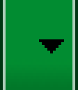

此教程将向您介绍如何通过以下方法支持各种尺寸的屏幕：
- 确保系统可以适当地调整您布局的尺寸以便适应屏幕
- 根据屏幕配置提供合适的用户界面布局
- 确保正确的布局应用到了正确的屏幕上
- 提供可正确缩放的位图
使用“wrap_content”和“match_parent”
要确保布局的灵活性并适应各种尺寸的屏幕，您应使用 "wrap_content" 和 "match_parent" 控制某些视图组件的宽度和高度。如果您使用 "wrap_content"，系统就会将视图的宽度或高度设置成所需的最小尺寸以适应视图中的内容，而 "match_parent"（在低于 API 级别 8 的级别中称为 "fill_parent"）则会展开组件以匹配其父视图的尺寸。
如果使用 "wrap_content" 和 "match_parent" 尺寸值而不是硬编码的尺寸，您的视图就会相应地仅使用自身所需的空间或展开以填满可用空间。例如：
<LinearLayout xmlns:android="http://schemas.android.com/apk/res/android"
android:orientation="vertical"
android:layout_width="match_parent"
android:layout_height="match_parent">
<LinearLayout android:layout_width="match_parent"
android:id="@+id/linearLayout1"
android:gravity="center"
android:layout_height="50dp">
<ImageView android:id="@+id/imageView1"
android:layout_height="wrap_content"
android:layout_width="wrap_content"
android:src="@drawable/logo"
android:paddingRight="30dp"
android:layout_gravity="left"
android:layout_weight="0" />
<View android:layout_height="wrap_content"
android:id="@+id/view1"
android:layout_width="wrap_content"
android:layout_weight="1" />
<Button android:id="@+id/categorybutton"
android:background="@drawable/button_bg"
android:layout_height="match_parent"
android:layout_weight="0"
android:layout_width="120dp"
style="@style/CategoryButtonStyle"/>
</LinearLayout>
<fragment android:id="@+id/headlines"
android:layout_height="fill_parent"
android:name="com.example.android.newsreader.HeadlinesFragment"
android:layout_width="match_parent" />
</LinearLayout>
请注意示例中使用 "wrap_content" 和 "match_parent" 控制组件尺寸的方法，而不是关注具体的尺寸。此方法可让布局正确适应各种屏幕尺寸和屏幕方向。
此视图在纵向模式和横向模式下的显示效果如下所示。请注意，组件的尺寸会自动适应屏幕的高度和宽度：

图 1。纵向模式（左）和横向模式（右）下的新闻阅读器示例应用。
使用相对布局
您可以使用 LinearLayout"wrap_content" 和 "match_parent" 尺寸，以便构建相当复杂的布局。不过，您无法通过 LinearLayoutLinearLayoutRelativeLayout
例如：
<?xml version="1.0" encoding="utf-8"?>
<RelativeLayout xmlns:android="http://schemas.android.com/apk/res/android"
android:layout_width="match_parent"
android:layout_height="match_parent">
<TextView
android:id="@+id/label"
android:layout_width="match_parent"
android:layout_height="wrap_content"
android:text="Type here:"/>
<EditText
android:id="@+id/entry"
android:layout_width="match_parent"
android:layout_height="wrap_content"
android:layout_below="@id/label"/>
<Button
android:id="@+id/ok"
android:layout_width="wrap_content"
android:layout_height="wrap_content"
android:layout_below="@id/entry"
android:layout_alignParentRight="true"
android:layout_marginLeft="10dp"
android:text="OK" />
<Button
android:layout_width="wrap_content"
android:layout_height="wrap_content"
android:layout_toLeftOf="@id/ok"
android:layout_alignTop="@id/ok"
android:text="Cancel" />
</RelativeLayout>
图 2 展示的是此布局在 QVGA 屏幕上的显示效果。

图 2。QVGA 屏幕（小屏幕）上的截图。
图 3 展示的是此布局在较大屏幕上的显示效果。

图 3。WSVGA 屏幕（大屏幕）上的截图。
请注意，虽然组件的尺寸有所变化，但它们的空间关系仍会保留，具体由 RelativeLayout.LayoutParams
使用尺寸限定符
上文所述的灵活布局或相对布局可以为您带来的优势就只有这么多了。虽然这些布局可以拉伸组件内外的空间以适应各种屏幕，但它们不一定能为每种屏幕都提供最佳的用户体验。因此，您的应用不仅应实施灵活布局，还应针对各种屏幕配置提供一些备用布局。要做到这一点，您可以使用配置限定符，这样就可以在运行时根据当前的设备配置自动选择合适的资源了（例如根据各种屏幕尺寸选择不同的布局）。
例如，很多应用会在较大的屏幕上实施“双面板”模式（相关应用可能会在一个面板上显示项目列表，并在另一面板上显示对应内容）。平板电脑和电视的屏幕已经大到可以同时容纳这两个面板了，但手机屏幕就需要分别显示。因此，您可以使用以下文件以便实施这些布局：
res/layout/main.xml，单面板（默认）布局：<LinearLayout xmlns:android="http://schemas.android.com/apk/res/android" android:orientation="vertical" android:layout_width="match_parent" android:layout_height="match_parent"> <fragment android:id="@+id/headlines" android:layout_height="fill_parent" android:name="com.example.android.newsreader.HeadlinesFragment" android:layout_width="match_parent" /> </LinearLayout>res/layout-large/main.xml，双面板布局：<LinearLayout xmlns:android="http://schemas.android.com/apk/res/android" android:layout_width="fill_parent" android:layout_height="fill_parent" android:orientation="horizontal"> <fragment android:id="@+id/headlines" android:layout_height="fill_parent" android:name="com.example.android.newsreader.HeadlinesFragment" android:layout_width="400dp" android:layout_marginRight="10dp"/> <fragment android:id="@+id/article" android:layout_height="fill_parent" android:name="com.example.android.newsreader.ArticleFragment" android:layout_width="fill_parent" /> </LinearLayout>
请注意第二种布局名称目录中的 large 限定符。系统会在属于较大屏幕（例如 7 英寸或更大的平板电脑）的设备上选择此布局。系统会在较小的屏幕上选择其他布局（无限定符）。
使用最小宽度限定符
在版本低于 3.2 的 Android 设备上，开发人员遇到的问题之一是“较大”屏幕的尺寸范围，该问题会影响戴尔 Streak、早期的 Galaxy Tab 以及大部分 7 英寸平板电脑。即使这些设备的屏幕属于“较大”的尺寸，但很多应用可能会针对此类别中的各种设备（例如 5 英寸和 7 英寸的设备）显示不同的布局。这就是 Android 3.2 版在引入其他限定符的同时引入“最小宽度”限定符的原因。
最小宽度限定符可让您通过指定某个最小宽度（以 dp 为单位）来定位屏幕。例如，标准 7 英寸平板电脑的最小宽度为 600 dp，因此如果您要在此类屏幕上的用户界面中使用双面板（但在较小的屏幕上只显示列表），您可以使用上文中所述的单面板和双面板这两种布局，但您应使用 sw600dp 指明双面板布局仅适用于最小宽度为 600 dp 的屏幕，而不是使用 large 尺寸限定符：
res/layout/main.xml，单面板（默认）布局：<LinearLayout xmlns:android="http://schemas.android.com/apk/res/android" android:orientation="vertical" android:layout_width="match_parent" android:layout_height="match_parent"> <fragment android:id="@+id/headlines" android:layout_height="fill_parent" android:name="com.example.android.newsreader.HeadlinesFragment" android:layout_width="match_parent" /> </LinearLayout>res/layout-sw600dp/main.xml，双面板布局：<LinearLayout xmlns:android="http://schemas.android.com/apk/res/android" android:layout_width="fill_parent" android:layout_height="fill_parent" android:orientation="horizontal"> <fragment android:id="@+id/headlines" android:layout_height="fill_parent" android:name="com.example.android.newsreader.HeadlinesFragment" android:layout_width="400dp" android:layout_marginRight="10dp"/> <fragment android:id="@+id/article" android:layout_height="fill_parent" android:name="com.example.android.newsreader.ArticleFragment" android:layout_width="fill_parent" /> </LinearLayout>
也就是说，对于最小宽度大于等于 600 dp 的设备，系统会选择 layout-sw600dp/main.xml（双面板）布局，否则系统就会选择 layout/main.xml（单面板）布局。
但 Android 版本低于 3.2 的设备不支持此技术，原因是这些设备无法将 sw600dp 识别为尺寸限定符，因此您仍需使用 large 限定符。这样一来，就会有一个名称为 res/layout-large/main.xml 的文件（与 res/layout-sw600dp/main.xml 一样）。您将在下一教程中了解到避免此类布局文件出现重复的技术。
使用布局别名
最小宽度限定符仅适用于 Android 3.2 及更高版本。因此，您仍需使用与较低版本兼容的概括尺寸范围（小、正常、大和特大）。例如，如果您要将用户界面设计成在手机上显示单面板，但在 7 英寸平板电脑、电视和其他较大的设备上显示多面板，请提供以下文件：
res/layout/main.xml:单面板布局res/layout-large:多面板布局res/layout-sw600dp:多面板布局
后两个文件是相同的，因为其中一个用于和 Android 3.2 设备匹配，而另一个则是为使用较低版本 Android 的平板电脑和电视准备的。
要避免平板电脑和电视的文件出现重复（以及由此带来的维护问题），您可以使用别名文件。例如，您可以定义以下布局：
res/layout/main.xml，单面板布局res/layout/main_twopanes.xml，双面板布局
然后添加这两个文件：
res/values-large/layout.xml:<resources> <item name="main" type="layout">@layout/main_twopanes</item> </resources>res/values-sw600dp/layout.xml:<resources> <item name="main" type="layout">@layout/main_twopanes</item> </resources>
后两个文件的内容相同，但它们并未实际定义布局。它们只是将 mainmain_twopaneslarge 和 sw600dp 选择器，因此无论 Android 版本如何，系统都会将这些文件应用到平板电脑和电视上（版本低于 3.2 的平板电脑和电视会匹配
largesw600dp）。
使用屏幕方向限定符
某些布局会同时支持横向模式和纵向模式，但您可以通过调整优化其中大部分布局的效果。在新闻阅读器示例应用中，每种屏幕尺寸和屏幕方向下的布局行为方式如下所示：
- 小屏幕，纵向：单面板，带徽标
- 小屏幕，横向：单面板，带徽标
- 7 英寸平板电脑，纵向：单面板，带操作栏
- 7 英寸平板电脑，横向：双面板，宽，带操作栏
- 10 英寸平板电脑，纵向：双面板，窄，带操作栏
- 10 英寸平板电脑，横向：双面板，宽，带操作栏
- 电视，横向：双面板，宽，带操作栏
因此，这些布局中的每一种都定义在了 res/layout/ 目录下的某个 XML 文件中。为了继续将每个布局分配给各种屏幕配置，该应用会使用布局别名将两者相匹配：
res/layout/onepane.xml:
<LinearLayout xmlns:android="http://schemas.android.com/apk/res/android"
android:orientation="vertical"
android:layout_width="match_parent"
android:layout_height="match_parent">
<fragment android:id="@+id/headlines"
android:layout_height="fill_parent"
android:name="com.example.android.newsreader.HeadlinesFragment"
android:layout_width="match_parent" />
</LinearLayout>
res/layout/onepane_with_bar.xml:
<LinearLayout xmlns:android="http://schemas.android.com/apk/res/android"
android:orientation="vertical"
android:layout_width="match_parent"
android:layout_height="match_parent">
<LinearLayout android:layout_width="match_parent"
android:id="@+id/linearLayout1"
android:gravity="center"
android:layout_height="50dp">
<ImageView android:id="@+id/imageView1"
android:layout_height="wrap_content"
android:layout_width="wrap_content"
android:src="@drawable/logo"
android:paddingRight="30dp"
android:layout_gravity="left"
android:layout_weight="0" />
<View android:layout_height="wrap_content"
android:id="@+id/view1"
android:layout_width="wrap_content"
android:layout_weight="1" />
<Button android:id="@+id/categorybutton"
android:background="@drawable/button_bg"
android:layout_height="match_parent"
android:layout_weight="0"
android:layout_width="120dp"
style="@style/CategoryButtonStyle"/>
</LinearLayout>
<fragment android:id="@+id/headlines"
android:layout_height="fill_parent"
android:name="com.example.android.newsreader.HeadlinesFragment"
android:layout_width="match_parent" />
</LinearLayout>
res/layout/twopanes.xml:
<LinearLayout xmlns:android="http://schemas.android.com/apk/res/android"
android:layout_width="fill_parent"
android:layout_height="fill_parent"
android:orientation="horizontal">
<fragment android:id="@+id/headlines"
android:layout_height="fill_parent"
android:name="com.example.android.newsreader.HeadlinesFragment"
android:layout_width="400dp"
android:layout_marginRight="10dp"/>
<fragment android:id="@+id/article"
android:layout_height="fill_parent"
android:name="com.example.android.newsreader.ArticleFragment"
android:layout_width="fill_parent" />
</LinearLayout>
res/layout/twopanes_narrow.xml:
<LinearLayout xmlns:android="http://schemas.android.com/apk/res/android"
android:layout_width="fill_parent"
android:layout_height="fill_parent"
android:orientation="horizontal">
<fragment android:id="@+id/headlines"
android:layout_height="fill_parent"
android:name="com.example.android.newsreader.HeadlinesFragment"
android:layout_width="200dp"
android:layout_marginRight="10dp"/>
<fragment android:id="@+id/article"
android:layout_height="fill_parent"
android:name="com.example.android.newsreader.ArticleFragment"
android:layout_width="fill_parent" />
</LinearLayout>
既然您已定义了所有可能的布局，那就只需使用配置限定符将正确的布局映射到各种配置即可。您现在只需使用布局别名技术即可做到这一点：
res/values/layouts.xml:
<resources>
<item name="main_layout" type="layout">@layout/onepane_with_bar</item>
<bool name="has_two_panes">false</bool>
</resources>
res/values-sw600dp-land/layouts.xml:
<resources>
<item name="main_layout" type="layout">@layout/twopanes</item>
<bool name="has_two_panes">true</bool>
</resources>
res/values-sw600dp-port/layouts.xml:
<resources>
<item name="main_layout" type="layout">@layout/onepane</item>
<bool name="has_two_panes">false</bool>
</resources>
res/values-large-land/layouts.xml:
<resources>
<item name="main_layout" type="layout">@layout/twopanes</item>
<bool name="has_two_panes">true</bool>
</resources>
res/values-large-port/layouts.xml:
<resources>
<item name="main_layout" type="layout">@layout/twopanes_narrow</item>
<bool name="has_two_panes">true</bool>
</resources>
使用自动拉伸位图
支持各种屏幕尺寸通常意味着您的图片资源还必须能适应各种尺寸。例如，无论要应用到什么形状的按钮上，按钮背景都必须能适应。
如果在可以更改尺寸的组件上使用了简单的图片，您很快就会发现显示效果多少有些不太理想，因为系统会在运行时平均地拉伸或收缩您的图片。解决方法为使用自动拉伸位图，这是一种格式特殊的 PNG 文件，其中会指明可以拉伸以及不可以拉伸的区域。
因此，如果设计的是用于尺寸可变的组件上的位图，请务必使用自动拉伸技术。要将某个位图转换成自动拉伸位图，您可以先准备好普通图片（图 4，放大了 4 倍以便清楚显示）。
图 4。button.png
然后通过 SDK 的 draw9patch 实用工具（位于 tools/ 目录中）运行该图片，您可以在该工具中绘制像素以标出要拉伸的区域以及左侧和顶部的边界。您还可以沿右侧和底部边界绘制像素以标出用于放置内容的区域，具体如图 5 所示。

图 5。button.9.png
请注意沿边界显示的黑色像素。顶部和左侧边界上的像素用于指定可以拉伸的图片区域，右侧和底部边界上的像素则用于指定放置内容的区域。
另请注意 .9.png 的扩展名。您必须使用此扩展名，因为系统框架需要通过此扩展名确定相关图片是自动拉伸位图，而不是普通 PNG 图片。
如果您将此背景应用到某个组件（通过设置 android:background="@drawable/button"），系统框架就会正确拉伸图片以适应按钮的尺寸，具体如图 6 中的各种尺寸所示。

图 6。在各种尺寸下使用 button.9.png 自动拉伸位图的按钮。